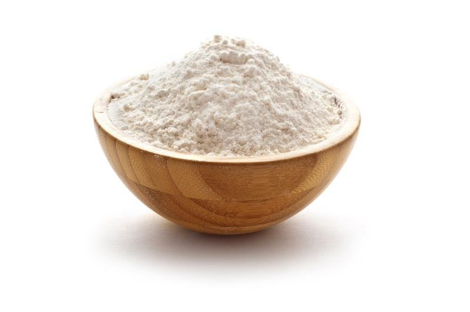

Go back to Grains and Flour
Price = #150
Eating more Flour is an easy way to add a layer of " health insurance" to your life. Whole grains are packed with nutrients, including protein, fiber, B vitamins, antioxidants, and trace minerals.
